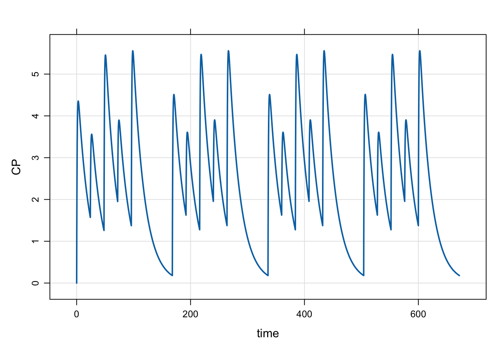

library(mrgsolve)
library(dplyr)1 Input data sets
An important mechanism for creating robust, complex simulations is the input data set. Input data sets specify the population of individuals to simulate, including the number of individuals, each individual’s dosing interventions, each individual’s covariate values etc. The input data set is just a plain old R data.frame, but with some expectations about which columns are present and expectations for how to handle columns for certain names. For example, every input data set has to have an ID, time, and cmt column. Note that either lower case names (like time and cmt) are acceptable as are upper case names (like TIME and CMT). But users are not to mix upper and lower case names (like time and CMT) for certain column names related to dosing events. The help topic ?data_set discusses more about what the expectations are for input data sets.
2 Functions to generate input data sets
mrgsolve provides several functions and workflows to help you put together the right input data set for your simulation. The main point of this blog post is to review some of these functions to help you better organize your mrgsolve simulations. Some functions are very simple and you might not find a function to do exactly what you want to do. But we’ve found these functions to be helpful to accomplish tasks that we found ourselves repeating over and over … and thus these tasks were formalized in a function. Just keep in mind that input data sets are just data.frames … you can use any code or any function (even your own!) to do tasks similar to what these functions are doing.
2.1 expand.ev
expand.ev is like expand.grid: it creates a single data.frame with all combinations of it’s vector arguments. It’s pretty simple but convenient to have. For example,
data <- expand.ev(amt=c(100,200,300), ID=1:3)
data ID time amt cmt evid
1 1 0 100 1 1
2 2 0 200 1 1
3 3 0 300 1 1
4 4 0 100 1 1
5 5 0 200 1 1
6 6 0 300 1 1
7 7 0 100 1 1
8 8 0 200 1 1
9 9 0 300 1 1This function call gives us 3 individuals at each of 3 doses. The expand.grid nature of expand.ev is what gives us 3x3=9 rows in the data set. Notice that the IDs are now 1 through 9 … expand.ev renumbers IDs so that there is only one dosing event per row and there is on row per ID.
Also notice that time defaults to 0, evid defaults to 1, and cmt defaults to 1. So, expand.ev fills in some of the required columns for you.
Let’s simulate with this data set:
mod <- mrgsolve:::house() %>% Req(CP)
mod %>%
mrgsim(data=data) %>%
plot(CP~time|factor(ID),scales="same")2.2 as_data_set
This function allows you to combine several event objects into a single data sets. An example works best to illustrate.
First, create three event objects. Let’s try one ID at 100 mg, two IDs at 200 mg, and 3 IDs at 300 mg.
e1 <- ev(amt=100, ID=1)
e2 <- ev(amt=200, ID=1:2)
e3 <- ev(amt=300, ID=1:3)The events are
e1Events:
ID time amt cmt evid
1 1 0 100 1 1and
e2Events:
ID time amt cmt evid
1 1 0 200 1 1
2 2 0 200 1 1and
e3Events:
ID time amt cmt evid
1 1 0 300 1 1
2 2 0 300 1 1
3 3 0 300 1 1When we combine these events with as_data_set we get
data <- as_data_set(e1,e2,e3)
data ID time amt cmt evid
1 1 0 100 1 1
2 2 0 200 1 1
3 3 0 200 1 1
4 4 0 300 1 1
5 5 0 300 1 1
6 6 0 300 1 1A nice feature of as_data_set is, unlike expand.ev and the previous example, we can use complicated event sequences that are expressed with more than one line in the data set. For example, consider the case where every ID gets a 250 mg loading dose, and then either get 250 mg q24h, or 120 mg q12h or 500 mg q48h.
load <- function(n) ev(amt=250, ID=1:n)
e1 <- load(1) + ev(amt=250, time=24, ii=24, addl=3, ID=1)
e2 <- load(2) + ev(amt=125, time=24, ii=12, addl=7, ID=1:2)
e3 <- load(3) + ev(amt=500, time=24, ii=48, addl=1, ID=1:3)Now, e1, e2, and e3 are more complex
e1Events:
ID time amt cmt evid ii addl
1 1 0 250 1 1 0 0
2 1 24 250 1 1 24 3e3Events:
ID time amt cmt evid ii addl
1 1 0 250 1 1 0 0
4 1 24 500 1 1 48 1
2 2 0 250 1 1 0 0
5 2 24 500 1 1 48 1
3 3 0 250 1 1 0 0
6 3 24 500 1 1 48 1But, we can still pull them together in one single data set
data <- as_data_set(e1,e2,e3)
data ID time amt ii addl cmt evid
1 1 0 250 0 0 1 1
2 1 24 250 24 3 1 1
3 2 0 250 0 0 1 1
4 2 24 125 12 7 1 1
5 3 0 250 0 0 1 1
6 3 24 125 12 7 1 1
7 4 0 250 0 0 1 1
8 4 24 500 48 1 1 1
9 5 0 250 0 0 1 1
10 5 24 500 48 1 1 1
11 6 0 250 0 0 1 1
12 6 24 500 48 1 1 1An example simulation
set.seed(1112)
mod %>%
omat(dmat(1,1,1,1)/10) %>%
data_set(data) %>%
mrgsim() %>%
plot
2.3 as.data.frame.ev
Just a quick reminder here that you can easily convert between a single event object and a data.frame
as.data.frame(e3) ID time amt cmt evid ii addl
1 1 0 250 1 1 0 0
4 1 24 500 1 1 48 1
2 2 0 250 1 1 0 0
5 2 24 500 1 1 48 1
3 3 0 250 1 1 0 0
6 3 24 500 1 1 48 1as.ev(as.data.frame(e3))Events:
ID time amt ii addl cmt evid
1 1 0 250 0 0 1 1
4 1 24 500 48 1 1 1
2 2 0 250 0 0 1 1
5 2 24 500 48 1 1 1
3 3 0 250 0 0 1 1
6 3 24 500 48 1 1 1So if you were building up an event object and just wanted to use it as a data_set or as a building block for a data_set, just coerce with as.data.frame.
2.4 assign_ev
This function assigns an intervention in the form of an event object to individuals in an idata_set according to a grouping column.
To illustrate, make a simple idata_set
set.seed(8)
idata <- data_frame(ID=sample(1:6), arm=c(1,2,2,3,3,3))Warning: `data_frame()` was deprecated in tibble 1.1.0.
ℹ Please use `tibble()` instead.idata# A tibble: 6 × 2
ID arm
<int> <dbl>
1 4 1
2 2 2
3 3 2
4 6 3
5 5 3
6 1 3Here, we have 6 IDs, one in arm 1, two in arm 2, three in arm 3. Let’s take the events from the previous example and assign them to the different arms.
e1 <- ev(amt=250) + ev(amt=250, time=24, ii=24, addl=3)
e2 <- ev(amt=250) + ev(amt=125, time=24, ii=12, addl=7)
e3 <- ev(amt=250) + ev(amt=500, time=24, ii=48, addl=1)
assign_ev(list(e3,e2,e1),idata,"arm") time amt cmt evid ii addl ID
1 0 250 1 1 0 0 4
2 24 500 1 1 48 1 4
3 0 250 1 1 0 0 2
4 24 125 1 1 12 7 2
5 0 250 1 1 0 0 3
6 24 125 1 1 12 7 3
7 0 250 1 1 0 0 6
8 24 250 1 1 24 3 6
9 0 250 1 1 0 0 5
10 24 250 1 1 24 3 5
11 0 250 1 1 0 0 1
12 24 250 1 1 24 3 1Please look carefully at the input (idata and list(e3,e2,e1)); I have mixed it up a bit here to try to illustrate how things are assigned.
2.5 ev_days
This is a recently-added function (hint: you might need to install the latest version from GitHub to use this) that lets you schedule certain events on certain days of the week, repeating in a weekly cycle.
For example, to schedule 250 mg doses every Monday, Wednesday, and Friday for a month, you can do
data <- ev_days(ev(amt=250, ID=1), days="m,w,f", addl=3)
data ID time amt cmt evid ii addl
1 1 0 250 1 1 168 3
2 1 48 250 1 1 168 3
3 1 96 250 1 1 168 3mod %>% mrgsim(data=data,end=168*4) %>% plot
Or, you can do 100 mg doses on Monday, Wednesday, Friday, and 50 mg doses on Tuesday, Thursday, with drug holiday on weekends
e1 <- ev(amt=100,ID=1)
e2 <- ev(amt=50,ID=1)
data <- ev_days(m=e1,w=e1,f=e1,t=e2,th=e2,addl=3)
data ID time amt cmt evid ii addl
1 1 0 100 1 1 168 3
2 1 24 50 1 1 168 3
3 1 48 100 1 1 168 3
4 1 72 50 1 1 168 3
5 1 96 100 1 1 168 3And simulate
mod %>% mrgsim(data=data,end=168*4) %>% plot
The same thing can be accomplished like this
a <- ev_days(e1,days="m,w,f",addl=3)
b <- ev_days(e2,days="t,th",addl=3)
c(as.ev(a),as.ev(b))Events:
ID time amt ii addl cmt evid
1 1 0 100 168 3 1 1
4 1 24 50 168 3 1 1
2 1 48 100 168 3 1 1
5 1 72 50 168 3 1 1
3 1 96 100 168 3 1 1data.frame to use as a data_set.
3 Filter input data set inline
Remember, when you pass in your input data set via data_set, you can filter in line:
data <- expand.ev(amt=c(100,200,300))
mod %>% data_set(data, amt==300) %>% Req(GUT,CP) %>% mrgsimModel: housemodel
Dim: 482 x 4
Time: 0 to 120
ID: 1
ID time GUT CP
1: 3 0.00 0.00 0.000
2: 3 0.00 300.00 0.000
3: 3 0.25 222.25 3.862
4: 3 0.50 164.64 6.676
5: 3 0.75 121.97 8.712
6: 3 1.00 90.36 10.174
7: 3 1.25 66.94 11.211
8: 3 1.50 49.59 11.934